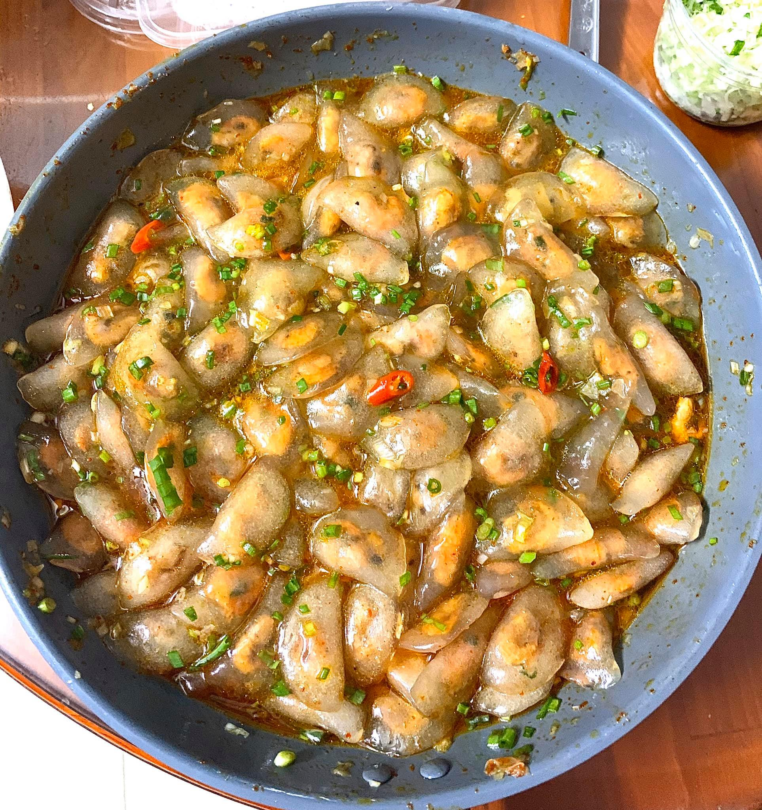
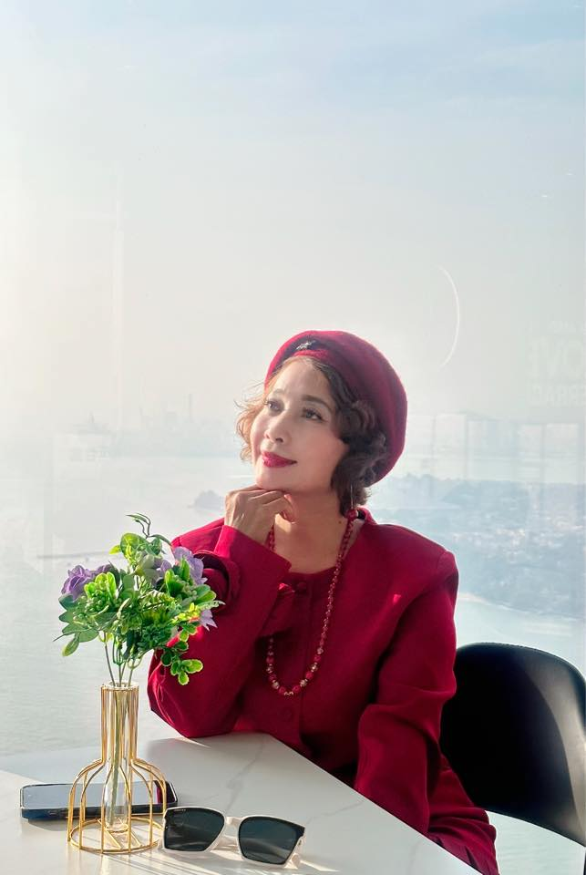
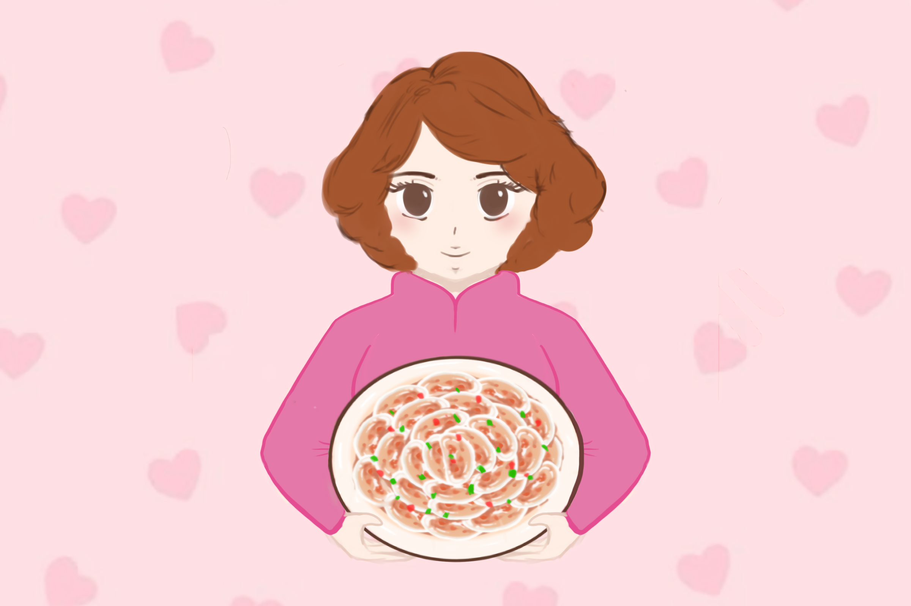
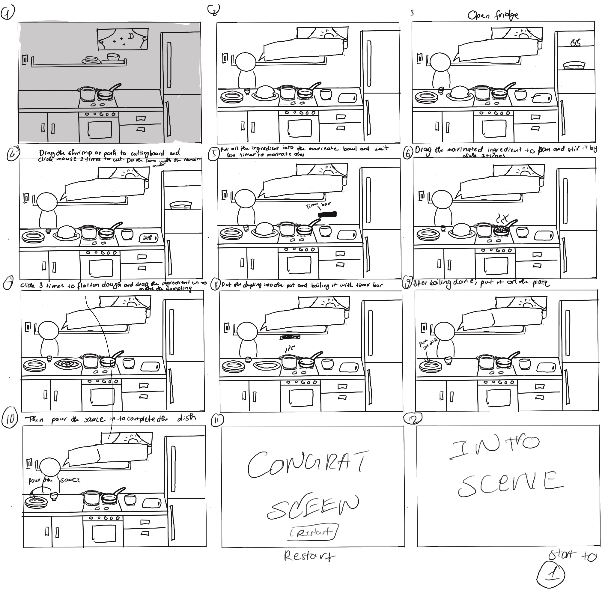
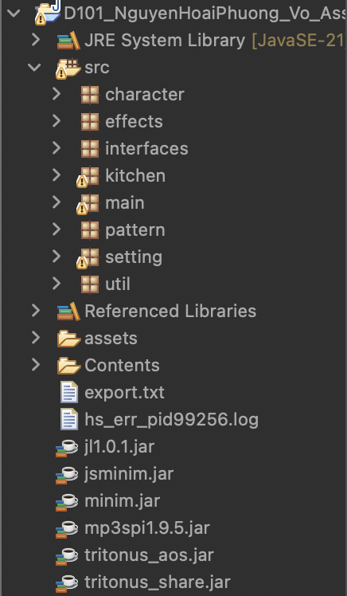
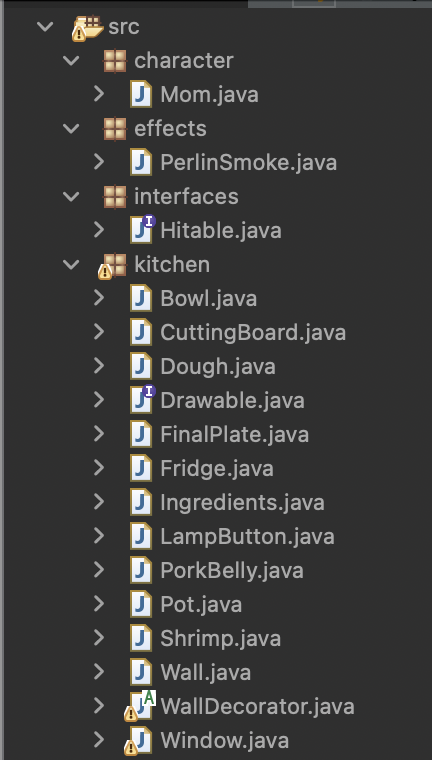
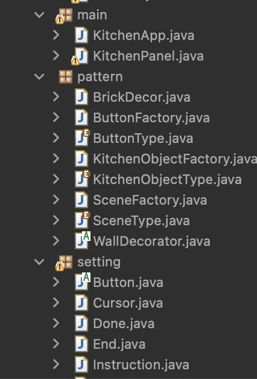

This simulator was created to celebrate traditional Vietnamese cuisine, especially lesser-known dishes like Banh Bot Loc — my favorite one. Inspired by my memories with Mom, the game offers a step-by-step experience of making these delicious dumplings. With Mom as a warm and encouraging NPC, players learn the process while enjoying her guidance and heartfelt compliments along the way.
# Simulator Development# Academic work# 2024
Key Responsibilities
Sketching, UI design, Programming, Testing and Debuging, Refinement
Software Skills
Eclipse, Ibispant, Procreate, Adobe, Canva
Story of Project
As an international student, I often miss the comforting flavors of home—especially my favorite dish, Bánh Bột Lọc. I realized that there weren’t many games or simulators featuring this traditional Vietnamese food, which inspired me to create one. My goal was not only to introduce this beloved dish to more people, but also to preserve the memories and cooking steps I learned from my mom. To create a warm, cozy experience for users, I included a Mom character as a gentle and encouraging assistant throughout the process.
Project Process
The simulator was developed using Java in Eclipse, with UI elements, introduction and end screen and background are drawn in Procreate and Ibispaint and imported as assets
UI Design
To achieve a cozy and warm aesthetic, I primarily used pastel colors throughout the design.Moreover I also used variety type of browns,pinks and reds. When illustrating the dish, I began by researching reference images of Bánh Bột Lọc online, then recreated it in my own drawing style. For the NPC character, I used my mom as inspiration, incorporating her likeness to create a personal and heartfelt presence in the simulator.

+

=>

Color Palette
Color Palette for main visual of simulator:
#fff2f5
#ffeed6
#ffccd8
#e5919d
#e57282
#936368
Color Palette for Mom - the NPC:
#ffeee3
#a5562f
#6b483a
#e579a8
#e54e91
Color Palette for Banh Bot Loc:
#fffaf6
#efb995
#e16a43
#db6b46
#fe6f6d
#68a724
Sketching Storyboard
My first step is always sketching out the idea to understand the flow and define how the simulator works, step by step. I believe that sketching not only helps me visualize the experience but also guides me on what I need to code in the program. To know which step goes first

Final Design
I carefully placed all of the simulator's materials after I had finished drawing them in order to create a cosy and welcoming kitchen setting. My intention was to create a charming, warm, and welcoming ambiance that captures the essence of cooking at home. Like cooking with a loved one, every piece was carefully crafted to make players feel at ease and welcome, from the pastel colour scheme to the delicate, hand-drawn textures. This location turned into the ideal background for cooking, enabling customers to completely lose themselves in the happy and sentimental moment.
Programming
The first step in my program was organizing files into well-structured folders. This ensured I knew exactly what to add, avoided overloading the project with unnecessary files, and could easily locate assets when needed.



As this was an individual project, I was fully responsible for all aspects of the coding process — from initial development to final refinement. I followed an iterative workflow to ensure the functionality was smooth and error-free:
Designed and implemented the core features and overall logic of the simulator.
Conducted thorough testing at each stage to ensure accuracy and usability.
Identified and debugged issues encountered during development.
Repeated multiple rounds of testing and refinement to enhance performance and eliminate bugs.
Closely followed the storyboard sketches to maintain consistency between design and user flow.
Testing
Testing was a crucial part of this project to ensure smooth functionality, clear logic, and an error-free user experience. My approach included:
Manually testing the simulator at each development stage to observe its behavior and flow.
Gathering feedback from my instructor and peers to identify logical inconsistencies or areas of confusion.
Debugging continuously throughout the coding process to minimize errors early on.
Conducting several rounds of testing and revision based on feedback to improve clarity and usability.
Validating that all gameplay steps followed the intended sequence and interactions behaved as expected.
Video of Simulator
Here is a short video that demonstrate how to play this simulator
Challenges
As with any coding project, this simulator came with its own set of challenges. From logic flow to user interaction, here are some of the key obstacles I faced during development:
Translating real-life cooking steps into interactive, logical sequences within the simulator.
Ensuring the timing and order of events made sense and felt natural to the player.
Debugging unexpected behaviors caused by complex interactions between multiple game elements.
Balancing usability with authenticity—making sure the game was clear to follow while staying true to the traditional process.
Refining the user experience based on ongoing feedback and making improvements without breaking existing features.
Reflection
This project was more than just a technical assignment—it was a personal journey that deepened both my coding skills and my cultural appreciation. Throughout the development process, I gained a stronger understanding of structuring logical interactions, managing visual assets, and refining user experiences through testing and feedback. Beyond the technical growth, creating a game that reflects my heritage and my bond with my mom made the experience incredibly meaningful. It reminded me how storytelling and technology can come together to preserve culture and create emotional connections. I’m proud of the outcome, and it motivates me to continue blending creativity and development in future projects.